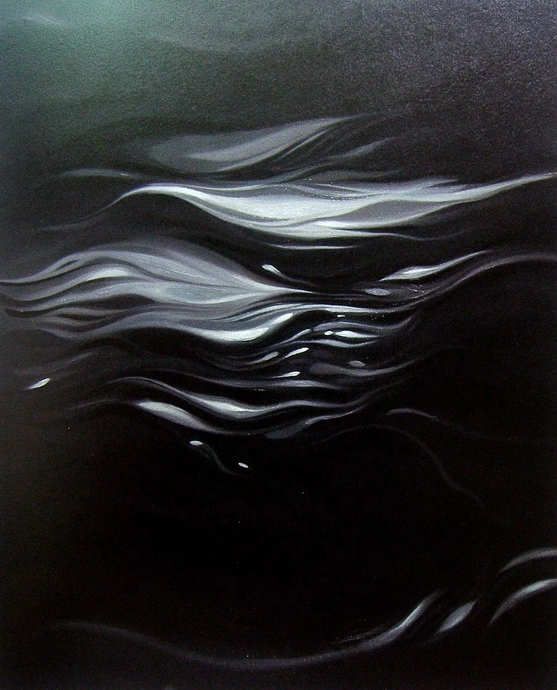
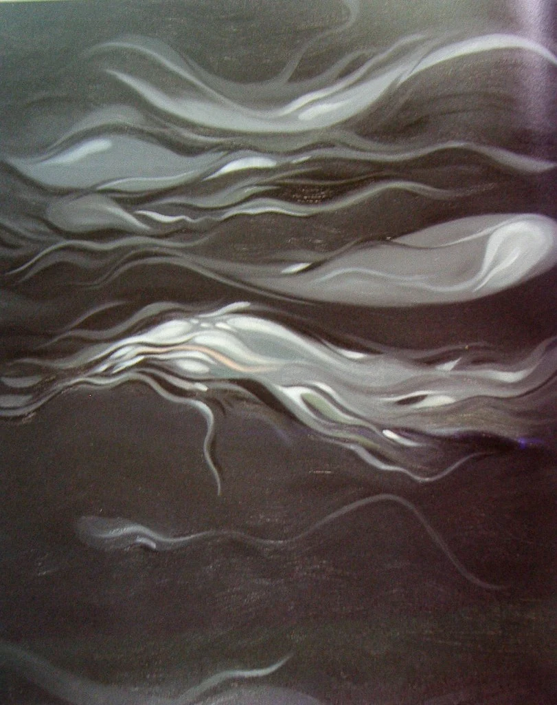
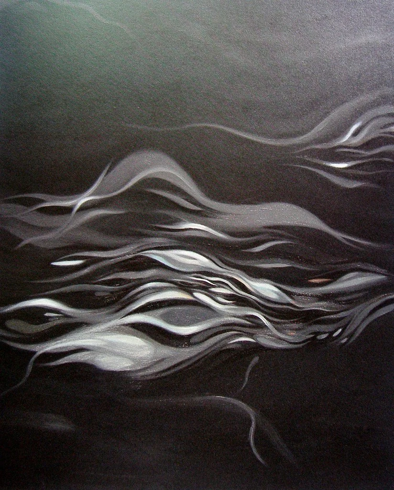

Innenansicht Nr. 10 (Triptychon)
- Werktitel
- Innenansicht Nr. 10 (Triptychon)
- Jahr
- 1997
- Maße
- 72 × 60 cm × 3
Bildbeschreibung (nach dem sichtbaren Bild, keine Aussage des Malers)
Auf der nahezu schwarzen Fläche liegen mehrere Schichten waagerechter, silbergrauer, schmaler Formen, die Wellen oder flatternden Bändern gleichen, dazwischen kleine weiße Punkte. Die obere linke Ecke hat einen dunkelgrünen Ton, in der unteren rechten Ecke befindet sich zudem ein kleines Büschel heller Linien.